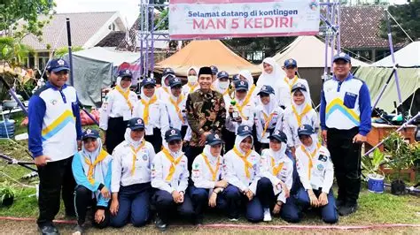

Detail Penghargaan PMR SMKN 1 Bogor
Tim PMR Terbaik Se-Kota Bogor
Tanggal: 18 Agustus 2024
Tempat: Markas PMI Kota Bogor
Kategori: Aksi Kemanusiaan dan Pertolongan Pertama
Tim Palang Merah Remaja (PMR) SMKN 1 Bogor dinobatkan sebagai Tim PMR Terbaik dalam acara Apresiasi Relawan Remaja PMI Kota Bogor 2024. Penghargaan ini diberikan kepada tim yang aktif dalam kegiatan sosial, donor darah sukarela, serta pertolongan pertama pada kejadian sekolah.
PMR SMKN 1 Bogor dinilai memiliki kontribusi besar dalam pengembangan budaya tolong-menolong di kalangan siswa, serta sering dilibatkan dalam pelatihan tanggap darurat bersama PMI.
- Partisipasi aktif di 12 kegiatan sosial selama 1 tahun
- Simulasi pertolongan pertama dan evakuasi bencana
- Pelatihan bersama tim medis PMI Kota Bogor
Pembina PMR:
Ibu Nia Rahmawati, S.Kep
